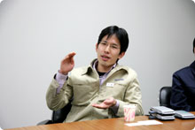
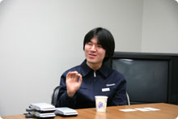
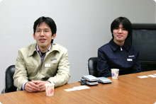
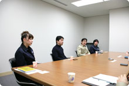
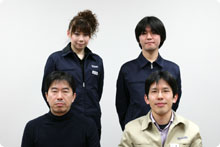

|
|
|
| --DS版が制作されるまでをお願いします。 |
| 大島：PC版の『えいご漬け』というソフトの存在は元々知っていて、開発の間でもかなり有名だったんです。で、このソフトはＤＳのタッチパネルでやるにはもってこいなんじゃないかという話になりまして、こちらから手書き部分のサンプルを作り、プラトさんに伺いました。それが2005年の７月末頃からの動きですね。 朝倉：こちらは初めにお電話を頂いた時、「断ってくれ」と言ったんですよね。自社製品をよそに作ってもらうのはどうかと思っていて。でもまあ、一度は会って話してみようかなということでお会いしたのが最初です。でもお話ししてみたら、やってみようという気になって。 |
| --それはどうしてでしょう？ |
| 朝倉：やはり知らない会社の方と初めてお仕事するというと、どうしても構えてしまうんですけど、お話ししてみたら意外にもと言うか、非常にいい人たちだったんですよ(笑)。DSを使って書き取りをするというのは大変じゃないかと思ったんですが、サンプルを見せて頂いた時に大変面白くて、これならいいと。このソフトで最も重要な部分である、"聞き取りに集中する"というところが完成していたので、やりましょうという話になりました。 |
| --そうしてDS版の制作が正式に稼動してからはどういったことを？ |
| 大島：いかに気持ちよくさらさら書けるかという部分を一番重要視して考えました。ノートに書いているように自然に書けるのが理想ですから。 伊藤：アルファベットで書くと、人によって筆跡や書き順がまちまちなんですが、その辺りの調整も含めてかなりやりました。手がしびれるほどに…(笑)。 大島：時間制限があったりして、どうしても急いで書く人が多いので、字が汚くなるんです。それでもストレスを感じずに書けるかというのが非常に重要ですから。字が汚いのを人のせいにできませんからね(笑)。 |
| --難易度はどうなんでしょうか。 |
| 朝倉：上のレベルで使われる単語や文章構造を見ても、文自体はそれほど難しくはないですね。ディクテーション主体のトレーニングなので、ある程度の人なら誰でも出来るんです。具体的に言えば、ほんとに英語が苦手な人から、TOEIC（R）TESTで600点〜700点辺りを目指す人まで、使えるとも言えます。収録されている単語数は1723個あります。 大島：僕が最初にPC版の『えいご漬け』を見た時、ちょっと難しいなと思ったんですね。だから初心者向けの"ウォーミングアップ"を入れることにしたり。とにかく誰でも入りやすいように、という部分をいろいろ追加しました。他に、英語のトレーニングという軸は置きつつ、とにかく楽しくやってもらうことが重要で。ディクテーションのトレーニングの仕上げ用としてオマケ的に「発音トレーニング」というものが入っているのですが、これはいかにイントネーションがお手本と一致しているかで判定するんですね。カラオケの採点みたいに全体の抑揚を見るんで、妙に流暢すぎても…というのはありますが。うまく言えればお楽しみ…です。 |
| --英語って、コンプレックスになっている人がかなり多いですよね。海外経験があったり、英会話を習ったりしていなければ、避けて通りたいっていう人が多いように思うんです。 |
| 大島：そうなんですよ。だからこのソフトも、最初はみなさんためらうようで…。人が見ている前ではやらずに、隠れてコソコソやったり…(笑)。 |
| --失礼ながら、皆さんの英語レベルはどうなんでしょう？ |
| 北村：大島は英語ができるほうなので、できない人の気持ちがわからないかもしれないでしょう？開発にはできない側の意見も必要なので、私はその代表なんです(笑)。 朝倉：私はギリギリですよ。とりあえず外人さんが混じっている会議で、なんとかやりとり出来るというギリギリのラインです。 |
| --それはギリギリとは言わないのでは(笑)。朝倉さんがこのソフトを作ろうと思われたきっかけはなんでしょう？ |
| 朝倉：昔から作ろうと決めていたんです。かつてメーカーにいた頃、アメリカの会社から何人かが来ていて、ディスカッションをしたことがあるんです。その時、とても有能だけど英語が苦手な人と、あまり能力がないように見えるのに英語が達者な人がいて、意思の疎通の部分で有能な人がとても損をしているように見えて。彼らが中身があっても(英語に対する)自信がなくて発言出来ないことを悔しく思ったわけです。だから自信を持ってもらうための物を作ろう、と。例えば人参嫌いの子供に無理矢理食べさせようとしても無理じゃないですか。みじん切りにしてハンバーグに入れるとかしますよね。英語も「もしかして出来ちゃうかも？」と思ってもらうことが大事なんです。ディクテーションはそういった要素のうちのひとつです。 |
| --これを使ったユーザーさんに、どんな効果を期待しますか？ |
| 朝倉：次のステップへ行こうと思ってくれればいいですね。まず最初の一歩ですから、ここで「楽しい」と思えれば次のステップへ行くでしょう。 大島：自信を持ってくれたらいいなと思います。同じ文章でも、何度かやっているとある瞬間分かる時が来るんで、そういうことから喜びが生まれて、自信がつきます。最初は、ゆっくり再生するパートを入れようと思ったんですけど、それを入れると実践で使えなくなるんですよね。通常速度で何度も繰り返してもらうと、必ず「あっ」という時が来ます。そうなれば、しめたものです。 伊藤：元のソフトから更に間口を広げるためには、どんな方法がベストか色々と考えました。  朝倉：元のソフトも充分に間口は広いんですよ。英語が苦手な大人、ほとんど出来ない人で、『英語の授業を受けたことがある』人へってことで。例ば"She can run very fast."という文章があって、それは決して難しくないし簡単じゃないですか。でも大島さんが広い層が入ってきやすいようにしなければ、ということで。 大島：DSのユーザは幅が広いですからね、開発中、いろんな人にやってもらったんです。すると想像どおり、食いつき具合に非常に差があったんですね。。"OK"の聞き取りをしてもらうと、"O"と"K"じゃないですか。「こんな簡単なのをやらせて、馬鹿にしてんのかー」って人と、「はいはい"OK"ね…」と納得してやってる人とがいて。 |
| --任天堂って英語が出来る人ばかりじゃないんですか？ |
| 伊藤：いや、そんなことはないですよ。 北村：うちは翻訳してくれる人が専門にいたりするんですよ。だから自分の英語力はどんどん退化するんです。でも『えいご漬け』の開発をやっていくうち、英語の字幕なしで海外の映画が観られるんじゃないかって勘違いしだしました(笑)。 朝倉：意味が解るように最低限の言語構造を理解して、後は、たくさんの文を聴いて、意味を感じることです。知った上での感覚。それが大事なんですよね。 大島：このソフトはそのための偉大な第一歩です。 朝倉：だから、その勘違いは前向きな勘違いということで、とても大事なんです。 |
| --楽しい、と思わせるためにどのようなことをされましたか。 |
| 大島：ネズミ取り、クロスワード、書き取りマラソンなんかもそうですね。なんで書き取りでマラソンなんだよって話もありそうですけど(笑)。 北村：仕様を話し合う時、色々なネタを出し合って、とにかく毎日トレーニングを続けてもらえるにはどうしたらいいか、最後まで悩んでましたね。 |
| --オススメの遊び方などありましたら。 |
| 北村：コツコツやっていくと、お楽しみが増えますね。毎日ちょっとずつ、コツコツと。 朝倉：受験生の方はぜひこれで単語を覚えて頂きたいです。リスニングにもいいですし、中学３年生レベルにちょうど合うんじゃないでしょうか。 大島：発音練習がかなりオススメです。伊藤がデバッグしている時、横で彼の発音を聴いてるとどんどん上手くなっていくのが分かるんですよ。しばらく経ったら、まるでネイティブのような発音になっていて(笑)。 伊藤：でも意味は解ってないんですよね、お手本を繰り返しているだけで中身は全然(笑)。 |
| --でも楽しそうですね、横で聞いてる方は。 |
| 伊藤：職場で声を出すのが、最初はすごく恥ずかしかったんですけど、途中で吹っ切れました。やってるうちに、お手本と同じスピードで喋れるようになるんですよ。恥ずかしがらずにぜひ声を出して欲しいですね。録音して、自分の発音を聴ける機能もありますから、お手本と聞き比べることもできます。 北村：聞き比べも恥ずかしいですけど。 伊藤：いや、これが段々気持ちよくなってくるんです(笑)。 朝倉：ディクテーションしながら真似る、書きつつ発音するっていうのはかなり学習効果高いですよ。 |
| --なにかオマケ的な機能ってありますか？ |
| 北村：知る人ぞ知るキャラクター、バーバラちゃん(『大合奏バンドブラザーズ』のキャラクター)が出ます。発音の採点をしてくれるんですけど、いいかげんな採点の象徴でかなりいいかげんです(笑)。発音が良いほどご機嫌が悪くなっちゃうんですよね。 朝倉：バーバラの年齢設定や性格を聞いて、セクシーでサディスティックで20代前半という女性をイメージしたんで、アメリカ人のとても綺麗な女性の声を当ててもらいました 伊藤：あと恥ずかしいオマケ機能として、発音練習で声を録音しておくと、他の人がやる時に自分の声が聴かれてしまうというのもあります(笑)。 |
| --他人の手に渡る前に、データを消しておかないといけませんね！ |
| 伊藤：いえ、録音したデータだけを消すことはできないんですよ。 北村：家族みんなでやる時は、聴かれたら困る言葉を入れないようにしましょう(笑)。 伊藤：他人にも自分が体験した恥ずかしさを、ぜひ味わってもらおうと思って。仕様を決めたのがマスターアップ１週間前という直前だったので、吟味せず通しました(笑)。 大島：これを使ってお子さんが"I love you."なんて言ってくれると嬉しいですよね。元々は子持ちのスタッフが、この録音機能で子供の声を聴けたらいいなぁっていう意見があって。忙しい時は仕事が終わって帰宅すると、子供達は寝ている時間ですから。これで子供の声が聴けたら嬉しいって。それはいい話だなぁってことで入れました。 |
| --では、ユーザーの皆さんへメッセージをお願いします。 |
| 北村：バーバラちゃんを知らない人の方が多いと思いますが、知ってる人も知らない人も、彼女にいたぶられたいなーという衝動に駆られたらぜひ遊んで下さい。 伊藤：色々な使い方が出来ると思うので、どうぞ色々と試して英語に慣れて下さい。 大島：楽しくやるのが英語上達の近道です。だから楽しんで遊んで下さい。 朝倉：英語は決して難しくないので、好きにさえなってもらえれば絶対に前へ進めます。そのためにも、ぜひDS版で遊んで下さい。 |
| --どうもありがとうございました！ |